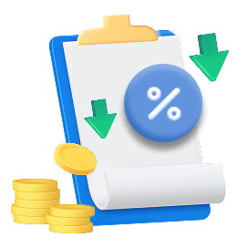
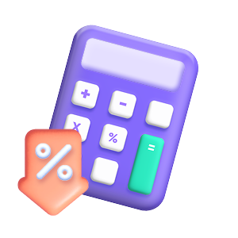

이전화면으로
AI대출금리케어
전체메뉴

마이데이터 금리인하요구권 서비스
AI대출금리케어
최초 1회 동의로 금리인하요구권을
자동·반복적으로 신청할 수 있어요.
마이데이터 자산연결로
다른 금융기관의 대출계좌에 대한
금리인하요구권도 행사할 수 있어요.
심사결과는 10영업일 내에
알 수 있어요.

심사결과가 수용으로 결정되면
인하된 이자율로 즉시 적용되고
자동으로 재약정이 체결되어요.
알아두세요
펼치기
마이데이터를 활용한 금리인하요구권 대행 서비스는 1개의 서비스(마이데이터 사업자)에서만 신청이 가능해요
다른 마이데이터 사업자로의 변경은 90일 이후에 가능하며, 90일 이후 다른 마이데이터 사업자에게 본 서비스를 신청하면 NH농협은행 마이데이터를 활용한 금리인하요구권 대행 서비스(AI대출금리케어 서비스)는 자동 철회돼요.
서비스 이용을 위해 NH마이데이터 가입이 필요하며 타 기관의 대출계좌에 대한 금리인하요구권 대행 신청을 원하시는 경우 자산연결이 필요해요.
서비스를 신청하고 난 이후에 금리인하 가능성이 있는 것으로 판단되는 경우 NH마이데이터서비스가 금리인하요구권을 자동으로 신청해요.
대출금융기관으로부터 심사결과에 따른 금리 수용/불수용 여부를 전달받아 알려드려요.
서비스 이용 중 기존에 연결된 대출계좌의 자산연결을 철회하는 경우 신청한 내역은 취소돼요.
금리인하요구 대상 상품이 아닌 경우에는 금리인하 심사대상에서 제외돼요.
- 제외대상 : 예적금 담보대출, 보금자리론, 보험계약대출, 운영리스, 리볼빙, 현금서비스(단기대출)
서비스 신청 후 대출금융기관에서 추가 정보 확인을 위해 별도의 동의절차가 필요할 수 있어요.
서비스 철회를 원하는 경우, NH마이데이터>설정>약관/동의서 관리>AI대출금리케어 해지에서 언제든 철회할 수 있어요. 철회 후 다른 마이데이터 사업자로 마이데이터를 활용한 금리인하요구권 대행 서비스 신청이 가능해요.
마이데이터를 활용한 금리인하요구권 대행 서비스의 이용동의 유효기간은 혁신금융서비스 지정기간 동안이에요.
신청하기